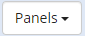

EDG Business Glossaries
About This Guide
This guide provides a hands-on tutorial for working with the TopBraid EDG Business Glossaries module.
See also
You may have this module “stand-alone” or in a combination with a Metadata Management package or another TopBraid EDG package. If this is the case, please also see Getting Started guides for your other packages.
The guide walks you through a series of day to day tasks you may perform using TopBraid EDG. Throughout this journey, the guide offers background information and instructions on each topic.
This document is organized by roles showing how:
Data Stewards, Business Stewards or Subject Matter Experts can create and modify glossaries, import and organize glossary content and manage information about a glossary. We also describe how fields available for describing glossary terms can be configured by using ontologies.
Business Analysts and other users can consult EDG to learn more about terms important to their work and how they connect to data.
In addition to following this guide, you may also want to watch a set of complimentary videos. You can watch some of these videos before doing the hands-on exercises described in the tutorial and/or come back to them at any point.
We have assembled the following list of short videos for you, organizing them into topics. The duration of the videos varies depending on a topic, but, on average, it takes between 5 and 20 minutes to watch a video.
Working with Business Glossaries
Workflows, Collaboration and Audit Trail
Data Import
Setting up Information Governance Framework
About Business Glossaries in TopBraid EDG
A glossary is a collection of terms in a particular domain (i.e., field or subject) of knowledge with the test definitions for those terms. Unlike dictionaries, which are more general collections of words, glossaries only concern themselves with terms that will enhance one’s comprehension of a certain topic. Glossary terms are often highly specific to a particular business subject or area of operation. They could be thought of as a ‘jargon’. Just about any business activity and organization you can think of has its own jargon to go with it – from professional disciplines to operational activities.
A business glossary goes beyond just a list of terms. Linking terms to IT assets establishes a connection between business and IT and enhances organizational collaboration. Glossary lets you create and manage a common vocabulary of terms important to your organization to ensure clear communication and improve productivity. These terms can be categorized in a way that is relevant to your organization. Multiple glossaries can be developed, interlinked, searched and explored. Valid definitions of values and business rules can then be managed and made available across the organization.
Glossary terms can be a ‘flat’ alphabetical list or they can be organized into hierarchies. In TopBraid EDG, the primary user interface (UI) for viewing and editing glossary terms looks like a spreadsheet. TopBraid EDG also supports a category of vocabularies that are called Taxonomies. Depending on your licensing, you may see this category of asset collections in your installation of EDG and, as a result, may wonder about the difference between Glossaries and Taxonomies and when to use each – especially, if your terms are organized hierarchically:
Unlike Glossaries, Taxonomies always assume that terms are organized and presented as hierarchies and that the hierarchical relationship between them is “broader concept” which is defined by the SKOS standard. SKOS doesn’t use the word “term” that is common to business glossaries. Instead, it uses the word “concept”. Further, each Taxonomy defines at least one concept scheme. A concept scheme points to its top concepts. The primary user interface for viewing taxonomies is hierarchical.
Even more importantly, Glossaries are designed to improve understanding of data’s context and usage. Glossary terms not only have descriptions of their meaning, but they also define business context of use and can be linked to the underlying technical metadata to provide a direct association between business terms and data sources and data elements. The underlying model or ontology for taxonomy concepts is SKOS. The underlying model for glossary terms is EDG-provided glossary model. It re-uses some of SKOS properties as appropriate. For example, a property for alternative labels of synonyms and properties for various notes.
In TopBraid EDG, glossary terms include description of business rules and permissible values – both, in plain English as well as in structured, executable rules that are used to automate connections between data elements and business terms. They may also connect to reference datasets and enumerations that hold lists of values specific to a given term such as “customer status”. Taxonomies, on the other hand, describe some domain of knowledge in general. They are often focused on providing a rich set of synonyms that are used in search, text mining and document classification.
Access the EDG Application
To work through this guide, use a browser to access the EDG web-application running in one of the following environments.
Create an EDG trial evaluation at TopQuadrant, and run EDG from the TopQuadrant servers. Submit an EDG evaluation request or contact TopQuadrant.
Use TopBraid Composer – Maestro Edition (TBC-ME), and run its demonstration version of EDG. Download and install TBC-ME. If using sample data, you will need to download and install EDG samples project.
Install EDG on a server accessible to your network (which could also be a local Tomcat server, via localhost). For a custom install, contact TopQuadrant and see EDG Server Installation and Integration. If using sample data, this will also require separate installation of the EDG samples project.
For the TBC-ME option, launch TBC-ME and then start the demo version of EDG via the top menu: TopBraid Applications > Open TopBraid EDG. Browse to http://localhost:8083/tbl. Logging in as Administrator requires no password for the demo version. All asset collection types are available in the demo version.
For the other two options, the system administrator or TopQuadrant will provide you with a URL, a username, and a password. Browse to the URL and log in. Server licensing will determine the availability of the various asset collection types.
TopBraid EDG User Interface
See also
For a basic orientation to the user interface, see EDG User Guide - UI Overview.
You will always see the collapsable left hand side Navigator that will help you navigate between asset collections and pages of interest. Menu sections in the Navigator are also collapsable and expandable. A “hamburger” menu button in the header offer an alternative approach to quick navigation between different glossaries.
Glossary Management
Setup Governance Areas and Roles
Governance areas organize glossaries (and other EDG asset collections) according to either business-oriented or data-oriented concerns. The areas can have associated governance roles, which help business teams to coordinate their management of the area’s collections via defined workflows.
See also
For additional details, see the Governance Model Overview.
We will first create a data subject area and assign a goverance role to it. Click GOVERNANCE MODEL > Governance Areas > Create Data Subject Area. Create the Customer Data Domain subject area and click OK.
TopBraid EDG Create Business Area
Once you added Customer Data Domain subject area add Data Steward governance role from a drop-down menu.
TopBraid EDG Add Data Steward
Assign Administrator a Data Steward role.
TopBraid EDG Assign Data Steward Role to Admin
From now on, a logged in Administrator (user ID) carries a governance role of Data Steward for the Customer Data Domain area. The scope of this role is any asset collection in the area. Governance roles can also be defined at the level of an individual glossary and even individual asset. They not only document responsibilities, but also determine what users can do as part of the workflows that are defined using governance roles.
Getting Started for the Steward
As a steward you need to be able to create and maintain glossary datasets. This part of the document will briefly explain you how to do that.
Creating, Populating and Changing a Business Glossary
Creating a New Glossary
You can create a new glossary:
Directly from the Governance Areas page by clicking on the area your new glossary should belong to and then choosing Glossary in the Choose Type drop down. Your newly created glossary will be automatically connected to the subject area.
You can also click on the + icon in the header and the select Glossary from the drop down of asset collection types
Alternatively, you can click on the Glossary asset collection in the left menu and click on the “Create New Glossary” in the top of the screen.
In either case, the Create dialog will ask you for the glossary name (label). You can also add a description and specify a “default namespace”.
The default namespace is used to formulate URIs for the glossary terms. Every asset managed by TopBraid EDG has a globally unique web identifier – a URI. People and applications can link and refer to this URI in a similar way to how web pages can link and refer to each other. URIs can be dereferenced by people and applications. This means that submitting a URI will return either a web page with its information or a data object representing it.
You can also select the preference for your instance data URI settings at the collection level. This will override the default set by and Administrator.
TopBraid EDG will pre-populate the default namespace field with a default that you can change. Let’s name our glossary “Customer Data Glossary” and add the following description: “A multi division effort to consolidate all customer related terminology.” Click on Create Glossary button.
TopBraid EDG Create New Glossary
After creation, you will be sent to an Import tab, where you can choose one of the ways of importing your data to a newly created glossary.
TopBraid EDG Import Glossary
Viewing and Changing Information about a Glossary
If you used the second method of creation, you may want to add more metadata about your new glossary such as the governance area it belongs to.
You can do this either prior to importing data into our glossary or at any point after importing. To update glossary metadata, go to the home icon in the editor to refresh the form panel for the collection itself, add a Customer Data Domain to a subject area in the form. Save changes.
Here, you will also see other information about the Glossary – such as its URI, what other asset collections include it, etc. Just like terms in the glossary will have a unique URI, each glossary will also be identified by a URI which is auto-generated by EDG.
Importing Data into a New Glossary
If you are not already on the Import tab, click on it and select Import Spreadsheet using Pattern. Then, click the Browse button to select the spreadsheet. (Download the Sample Customer Data Glossary.xlsx in the appendix) spreadsheet to get a local copy to import). Choose a Glossary term as an entity type and click Next button.
In the next page choose the spreadsheet type from the selection menu. Based on the sample of the first 6 rows in your spreadsheet, notice that data from the spreadsheet doesn’t follow any hierarchy. Thus, choose “No Hierarchy” from the menu. Click Next button. In the next screen specify how the columns from the spreadsheet will be mapped. In this example a description column will be mapped to a definition and make label column as unique ID. Click Finish to import the data.
TopBraid EDG Import Spreadsheet
You should see “Completed Spreadsheet Import” screen. Click on the Terms tab to see the imported data.
Note
You can collapse the left hand side Navigator to get more space.
TopBraid EDG Customer Data Glossary
You can change the columns of the displayed table by clicking on the Select Visible Columns icon. It lets you control what fields to display in the table. Our spreadsheet only contained term names and descriptions. You can capture a lot more information now that your glossary is managed by TopBraid EDG. For example, you can add business rules about the term and link it to other enterprise information such as business activities. You can also connect terms to each other and organize them into hierarchies.
Buttons on top of the table let you create a new term, delete selected term or a group of terms, edit information about a group of selected terms, export data in the table and more. To change information about a single term, single click on it.
TopBraid EDG Glossary Term Information
An Asset form with information about the term will be shown in a panel on the right. If the form is not on the page, click the  dropdown located on the right upper corner of the page and drag Form somewhere to the page
You can click on Edit to make changes. Alternatively to clicking on the Edit button, you can use inline editing. Hover to the left of the field’s value to see a pencil icon. Click on it to start in-line editing. If a field you want to enter information in does not currently have any information, it may not show up. To get all fields to show up, click on the Settings menu (gear icon) at the top right of the form and check Also show properties that have no values.
For example, you could create a new acronym for a term.
Other assets can be linked or mapped to a glossary term. For example, catalogs of data sources can map database columns and tables to a term.
See also
To see any assets that are not part of this glossary, but are using and referring to terms in a glossary, click Explore>Find Usages in Other Asset Collections… option.
Creating a New Term
Select New at the top of the table.
TopBraid EDG Create Business Term
The Create dialog will require you to enter a name (label) of the new term. You will be able to see the auto-generated term URI and modify it if necessary. You will also be able to select a sub category of a Glossary term, if desired. EDG’s pre-built glossary model distinguishes between glossary term, business term, technical term, industry term and a PII term. Your organization may decide to create your own sub types of terms and/or to disable the sub types included in EDG.
Type “Customer ID” as the new term label. Select Business Term from the drop down by clicking on the Glossary Term. Click Confirm.
Your new term is created. You will see a form where you can enter more information about the term.
Editing Glossary Terms via Workflows
Select the Customer ID term. Notice that it doesn’t have a description.
TopBraid EDG Glossary - Customer ID
This could be fixed directly in the glossary or can be done in a context of a workflow (with an associated working copy) that would store the information about changes to the glossary term. This way, all changes go through a workflow process enabling collaboration and better control over data. EDG uses the following terminology:
The production copy is the master version of the glossary.
A working copy is a virtual copy of the glossary created for editing purposes. A working copy gets created when a new workflow starts and is associated with that workflow. Changes you make in the working copy will go through a workflow approval process described in the workflow template. At the end of the process changes typically get published to the production vocabulary.
Several workflows, each with its own associated working copy, may be in progress at the same time as users in various roles make and review changes in those working copies. All working copies can be accessed from glossary’s Workflows tab that displays workflows in progress. TopBraid EDG offers a built-in workflow template (called Basic workflow). You can also add custom workflows to EDG.
See also
More information about it can be found in the Workflows section
When you make changes directly in the glossary, your changes will be immediately visible to everyone using the glossary. They will also show up in any working copy created for the glossary. When you make changes in a context of a workflow, they are kept in the workflow’s working copy. Thus, changes will only be visible in that workflow.
EDG users with the appropriate permissions can choose between making changes directly to a glossary and using workflows to make and review changes. You can start a workflow for a glossary as a whole or for a particular term in a glossary. We will do the latter.
Single click on the Customer ID term to have its form open in the right panel. Click on the Available actions for this button and select Start Workflow from the menu.
TopBraid EDG Glossary - Start Workflow
In the dialog that appears, name the workflow “Customer ID description” and click on Submit button. If your installation has more than one workflow template that is applicable to glossaries, you will get a chance to select the type of workflow. After the workflow is created you will see Workflow Status and Transitions page. You can always come back to this page by clicking in the gear icon in the header (located to the left of the Terms tab).
You know that you are now in the context of a workflow because the color of the header menu changed to yellow. Click on the Customer ID link in the header.
This will open a form for Customer ID term. Click on an Edit button in the right top menu of the right pane. Add the following definition: “Customer ID is a 5 character alphanumeric field exactly identifying a customer” and click Save Changes.
Click the dropdown located in the header of the page, drag Change History panel (under Reports) and drop it into the page. Click on the Refresh icon in the panel to see the log of changes. Click On selected button to only see edits that were made to the currently displayed term.
Clicking on the gear button to the left of the Terms tab will return you to the Workflow Status page. Now that you made some changes, you will see more actions available to transition the workflow to a next state. You can Freeze for review and you can also directly Commit changes to production. The former action will put the workflow in the state where no more changes can be made. It is designed to let responsible parties review the content and either approve or reject it. They could also unfreeze the workflow opening it to further changes. The latter action will complete the workflow and write all changes to the Glossary.
To exit the workflow in progress and come back to the current (AKA production) version of the Glossary, click on the x button to the right of the Customer ID description in the header at the top of the page.
Customizing Glossary Terms Metadata
Creating and Including Ontologies
Metadata available for each glossary term in EDG is defined in an ontology. If you are satisfied with properties that are provided for glossary terms, then you don’t need to modify the glossary ontology. However, you may want to add new fields (properties) or remove existing fields. You can address this by creating an extension to the pre-built TopBraid EDG glossary ontology.
To do so, click on the + icon in the header and Create New Ontology. You can name it Glossary Ontology Extensions or select another name of your choice.
Include the TopBraid EDG Glossary model in the new ontology. Go to Settings tab and click on an Includes to see the pop-up window. In a pop-up window filter our EDG SHAPES – Glossary (Other) and add it to the includes.

TopBraid EDG Glossary Ontology Extenstions
Go to Manage tab and type Glossary Term in the Root of Class Hierarchy Panel. This will set the root of the ontology class tree to the Glossary Term and will make it easier for you to focus on your changes.
Creating a New Property
Let’s add a new property for the glossary terms. We will add a new property origin code that doesn’t exist in a current model. Click on the Ontology tab, then click to select the Glossary Term in the Classes tree panel.
In the panel below the terms (Property Groups), choose a green icon to create a new attribute.
TopBraid EDG Glossary - Create Attribute
In the Create Attribute dialog name the new attribute origin code.
TopBraid EDG Glossary - Create Attribute Dialog
In the Description field enter: “A 3 character code for the origin of the term”. Select Optional for Cardinality. Select string for Datatypes. Click OK.
After creation of the new attribute we can edit its information. We can for example add a constraint about the length of values for this property. Click on the Edit button and in the String Constraints section enter 3 in the min and max length field. If you do not see this section, click on the Settings (gear) icon at the top right of the form and check Also show properties that have no values.
TopBraid EDG Glossary - Add a Constraint
Disabling a Property
If you do not want to use some of the predefined properties and want to remove them from the user interface, click on the property you want to remove, then set “deactivated” (in the Definition section) to true.
Making Ontology Customization Available to a Glossary
Once we created custom modifications we need to make them available to our glossary. Go back to the Customer Data Glossary and select Settings tab. Click on Includes link, search for Glossary Ontology Extensions and add it to the glossary. After closing a screen you should be able to see the following:
TopBraid EDG Glossary Includes Section
The new attribute can now be used to describe terms contained in the Customer Data Glossary. You will need to make similar includes for each Glossary that you want to use the new attribute.
Your organization can also decide that these customizations should be automatically available to all glossaries. There is a setting in the Administration console EDG Configuration Parameters page that lets administrators specify that a customization ontology should be included in any newly created glossary.
Click on the Terms tab and select one of the glossary terms. You will now see the new property appear among the available fields.
TopBraid EDG Glossary Term Metadata
As an exercise, add a value to the origin code and save it.
Export, Collaboration, and Other Activities
Some of data stewards’ tasks overlap with the tasks of other users. For example, data stewards may build glossary data, but so do subject matter experts, who could be responsible for adding descriptions to the glossary terms. These overlapping activities, including collaboration between users working with glossary data, are covered in the Getting Started Guides for Vocabulary Management package and Reference Data Management package.
Saving and Reusing Searches
You may want to reuse your search results in the future. You can save the search criteria by clicking on Save icon in the search panel.
TopBraid EDG Glossary Save Search
A pop-up window will request you to give a name to your search. Click OK to save your search.
To view saved searches, you can click the dropdown located in the page header and drag Search Library panel to some location on the page. Alternatively, use the Layouts dropdown to switch to the Search Layout. It already contains this panel. Select a search of your choice and click Select search. This will recreate the saved search criteria on the page.
Data Export
Glossary data can be exported directly from the table by clicking on Export Actions button. It will let you export results in Excel, CSV, TSV and JSON formats. Everything in the table will be exported unless you select specific rows. Then, only selected rows will be exported.
You can also use SPARQL Query layout to run queries if your search criteria is more complex than what is possible with the Search panel. You can save queries to re-run them in the future and access queries saved by others. Saved queries are shown in the SPARQL Library panel.
You can also save search criteria. Saved searches appear Search Library panel. Export Saved Search option in the Search Library panel will provide your results in JSON format. The URL of the saved search is displayed in the Service URL field, including a unique id for the saved search. This URL can be copied as-is and included in any third-party application needing to extract the codes in the saved search. The format will be JSON.
Some additional export options are available on the Export tab. This tab includes an option to export all information available in a dataset.
Deleting Saved Searches
Saved searches can be deleted in the Search Library panel. Open the Search Library panel, select the search to remove and click Delete.
Using Glossary Terms to Provide Context for Other Assets
If you are using TopBraid EDG for Metadata Management you will want to link other assets (for example, data elements) with glossary terms to provide business context to the assets you are responsible for. TopBraid EDG can auto-generate such connections based on the rules declared for glossary terms and other available information such as the information obtained from the data source profiling. You can also manually link other assets to glossary terms by updating their maps to term property. See relevant User Guides for more details.
Getting Started for the Business Analyst
Finding a Term
On the Home page, in the Search the EDG box, type your search keyword – for example, Customer. Be sure to check the box for including this collection in Search the EDG from the Manage tab of the collection.
In the search results page, you will see search facets on the left that will help you further filter out the search results.
Next to each search result, you will see:
Comments link that will let you enter comments for the stewardship team and see comments entered by other users
Icons that will take you diagrams and views for visually exploring information. Depending on the TopBraid EDG packages installed in your environment, you will see different interactive views such as NeighborGram for navigating the connected graph of information associated with a business term, Data Lineage and Data Impact.
TopBraid EDG Search
Finding your Workflows
If you are involved in some workflows, you will see a list of workflows for which you have pending actions by clicking on My Workflows in a Dashboard section.
TopBraid EDG My Workflows Page
Next Steps
You are now ready to explore the Asset Collection Guide to learn more about the many capabilities of TopBraid EDG, including workflows for team collaboration, importing more complex spreadsheets, and more.